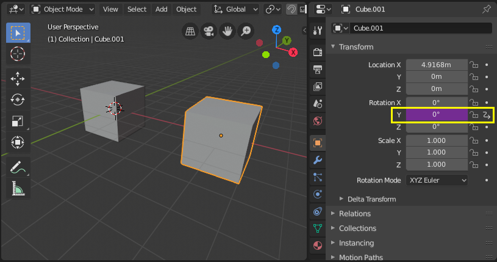
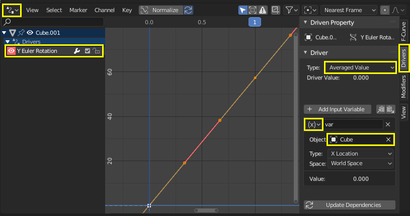
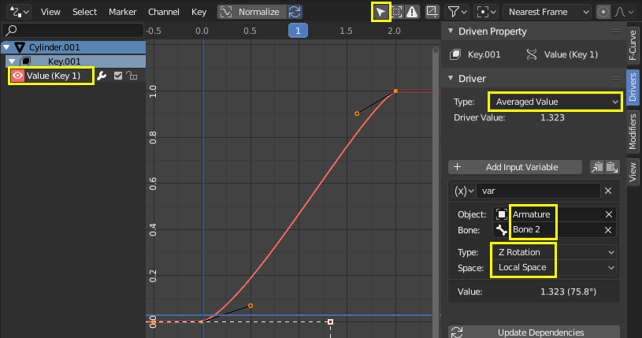
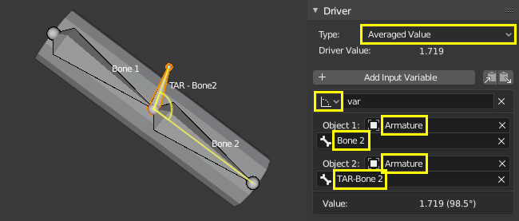
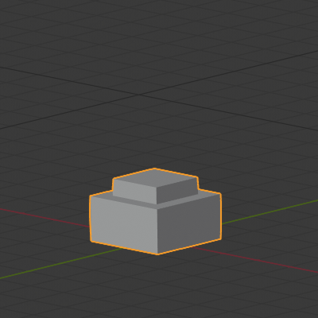
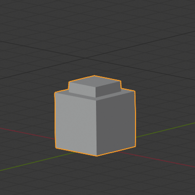
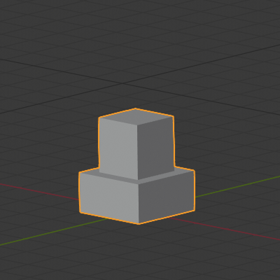
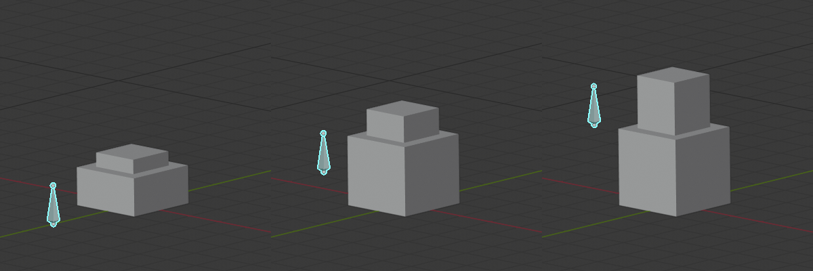
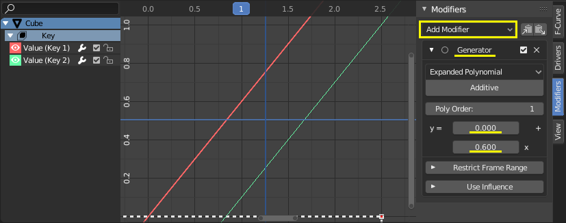

Workflow & Examples¶
Simple Drivers can be configured from the pop-over that appears when adding a new Driver.
When adding multiple Drivers or for more advanced configurations, it is useful to have open the Drivers Editor.
Transform Driver¶
Control a property with an object’s transform. In this example, the Y rotation of Object 2 will be driven by the X position of Object 1.
Starting from a simple setup with two objects:
Add a Driver to the Rotation Y property of the second object via the context menu or with Ctrl-D.
Open the Drivers Editor and select the Y Euler Rotation property in the channels region.
Open the Sidebar region and select the Drivers tab.
Configure the driver to be the Averaged Value of a Transform Channel of the first object.
Experiment with moving the first object and notice how it affects the Y rotation of the second object.
Scripted Expression - Orbit a Point¶
Orbit an object’s position around a point with a custom Scripted Expression. The object’s position will change when scrubbing the timeline.
Using trigonometry, circular motion can be defined in 2D using the sinus and cosine functions. (See Unit Circle.)
In this example, the current frame is used as the variable that induces the motion.
frame is a Simple Expression that corresponds to
bpy.context.scene.frame_current.
- Add a driver to the X Location property.
- Set the Driver Type to Scripted Expression.
- Add the expression
0 + (sin(frame / 8) * 4), where:frame/8: is the current frame of the animation, divided by 8 to slow the orbit down.(sin( )*4): multiplies the result ofsin(frame/8)by 4 for a bigger circle.0 +: is used to control the offset to the orbit center point.
- Add a driver to the Y Location property with the expression
0 + (cos(frame / 8) * 4). - Scrub the timeline to see the effect. Experiment with the variables to control the size and center of the orbit.
Custom Function - Square Value¶
Create a custom function to get the square of a value (i.e. value2). Adding the function to the Driver Namespace allows it to be used from driver expressions.
The Driver Namespace has a list of built-in functions for use in driver expressions, as well as constants such as π and e. These can be inspected via the Python Console:
>>> bpy.app.driver_namespace[' <tab>
acos']
acosh']
asin']
asinh']
atan']
...
To add a new function to the Driver Namespace, the function itself needs to be implemented
and then added to the bpy.app.driver_namespace.
Add the following to the Text Editor inside Blender and press Run Script.
import bpy def square(val): """Returns the square of the given value""" return val * val # Add function to driver_namespace. bpy.app.driver_namespace['square'] = square
Add a driver with a Scripted Expression such as
square(frame).Observe the effect when scrubbing the timeline.
There are more custom function examples available in Blender’s Text Editor .
Since Simple Expressions cannot access custom functions, using them only makes sense for complex computations.
Shape Key Drivers¶
Improved Mesh Deformation¶
Fix intersection problems that happen when using armatures and weight painting, especially at joints. Shape keys can also be used to tweak and refine a rig, for example to suggest muscle formations. In this example, a shape key is used to improve the deformation at the elbow of a rudimentary arm.
Left: Skeletal mesh deformation without correction. Right: Corrective shape key applied
- Setup
- Add a mesh (in this example, a cylinder with loop cuts).
- Add an armature with a chain of bones.
- Skin the mesh to the armature using weight painting.
(Note: to parent the mesh to the armature: select the mesh first, then the armature and use Ctrl-P to parent with auto weights.)
Experiment with posing the armature and observe the deformation at the joint. To fix intersection problems or angles that look unsatisfactory, you can associate a Shape Key with a pose.
- Shape Key
- Pose the armature such that the problems are visible. Be sure to cover the extreme poses that you want to support for the rig.
- With the mesh selected, add a new Shape Key in addition to the Basis key.
- In order to author the shape key on top of the armature deformation, enable both Edit Mode Display and Cage Editing in the armature modifier.
- Enter Edit Mode and select the new shape key in the properties panel. Adjust the vertices as desired. Select the Basis key to toggle between the original mesh and your edits. (Note: be careful to apply edits only to your shape and not to the original mesh or other existing keys.)
Once you are satisfied with how the deformation looks for the problematic pose, you’ll need to configure a driver to activate the shape smoothly when entering that position.
- Driver
- Add a driver to the Value of the shape key you’ve created.
- Open the Drivers Editor and select the driver.
- Method 1 – Direct mapping to a bone rotation value
A simple way to configure the driver is with a direct correspondence of the value of a bone’s rotation channel to the shape key activation Value. This method has the disadvantage of relying on a single channel of a bone’s rotation which might be insufficient to precisely express the condition under which the shape key should be activated.
In the Drivers tab, select the Averaged Value of the rotation of the bone you’re posing.
Understand the rotation axis that you’re interested in by enabling axes display in the armature or by observing the bone’s transform values in the Properties.
Select the rotation channel and set it to local, meaning, the bone’s rotation value relative to its parent bone.
Manually set points in the driver curve by selecting a handle and dragging it or inserting values in the F-Curve tab. The Y axis represents the shape key Value, which should go from 0.0 to 1.0. The X axis is usually the frame, but for this driver it represents the rotation value in radians. You can have more than two points in the curve and tweak the transitions with the handles in the curve view (G to move).
To verify that the driver behaves correctly, deselect the option to only show drivers for selected objects. This way, you can pose the armature and keep an eye on the driver.
- Method 2 – Rotational difference to a target bone
This method requires an additional target or corrective bone, but it better expresses the spatial condition in 3D space of the bone that is causing the problem.
In armature Edit Mode, add a new bone extruded from Bone 1, in the position at which Bone 2 should have the shape key active. This type of bones usually follow a naming convention such as “TAR-” (target) or “COR-” (corrective).
In the Drivers tab, select the Averaged Value of the rotational difference between the bone you’re rotating and the target bone. A rotational difference is the minimum angle between two objects in World Space. It is therefore important that the bones have the same root, so that the only thing affecting the angle between the bones is the rotation of one of them. When the deformation bone (Bone 2) reaches the target rotation (TAR-Bone 2) the rotational difference will be 0°.
Manually adjust the driver curve handles so that the shape key Value (Y axis) is 1.0 when the rotational difference (X axis) is 0°. The Value should be 0.0 when the arm is extended, at which point the rotational difference should be around 90° or more (in radians).
See the steps in Method 1 on how to adjust the curve handles and confirm that the functionality is working. Pose the armature to verify that the ranges are correct.
Chained Relative Shape Keys¶
Activate different shape keys in succession. In this example, moving a single bone will activate first Key 1 and then Key 2. See also relative shape keys mix additively.
- Shape Keys
- Add two shape keys to a mesh, besides the Basis.

Basis |

Key 1: top faces moved up by 1m |

Key 2: inner top moved up by 1m |
{kind=link}
{kind=link}
{kind=link}
- Drivers
Add an armature with a single bone to control the shape keys. The goal is to activate the keys in succession as this bone moves up.
As shown in the picture above, when the bone is halfway up, both Key 1 and Key 2 have an influence. It is a matter of preference if Key 1 should be at its maximum Value before Key 2 starts to become active, or how much they should overlap. This example shows a seamless blend.
For a seamless blend where there is overlap, Key 1 should have a Value of 0.0 when the bone is at the bottom and increase linearly to 1.0 until the bone is past the midpoint height. Key 2 should have a value of 0.0 before the midpoint height and then increase at the same rate than Key 1 until reaching Value 1.0 when the bone is at maximum height.
Add a driver to the Value of Key 1 and Key 2. In the Drivers tab, configure both drivers to be the Averaged Value of a variable with the bone’s Z location.
Determine the range of the bone’s motion in the World Z axis by moving it up so that it is aligned with the top of the mesh when both keys are active. Here we will use [0.0 , 2.5].
Configure the driver functions so that the Value of the shape keys (Y axis) is as desired for the bone’s height (X axis).
The driver functions should be linear, therefore, they can be defined analytically with a function of type \(y = a + bx\), where \(a\) is an offset in \(y\) and \(b\) is the slope.
In the Modifiers tab, add a Generator of type Extended Polynomial for both drivers.
Play with the values of \(a\) and \(b\) so that the curves go from [0.0 , 1.0] in the Y axis and from [0.0 , 2.5] in the X axis. The curves should overlap in the mid area of the X axis and they should have the same slope (\(b\)).
Possible values are Key 1: \(y = 0.0 + 0.6x\) and Key 2: \(y = -0.5 + 0.6x\).
Note that the functions go outside the range [0.0 , 1.0] for the shape keys’ Value, but that has no effect because Value is clamped in a Range in the Shape Keys panel.